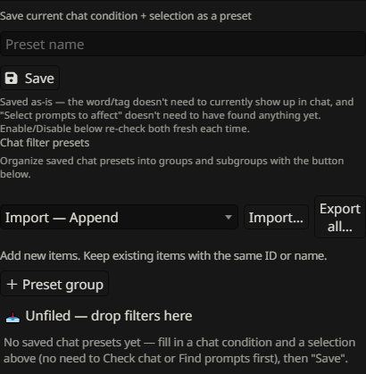

Filter presets
Save manual filtering recipes, organize them in groups, protect them from accidental execution, and share individual presets or whole collections.
Save & run a preset

Configure a manual Filter criterion, scope and target, enter a name, then save. A valid criterion can be saved even before Apply or when nothing currently matches. The saved row exposes Enable and Disable actions.
Running a preset rereads current prompt content/tags, respects the current exclusions and scope, and applies its saved target. It stores a recipe, not a snapshot. To change a manual recipe, save a new preset and remove the old one, or import a replacement; the manual preset rows do not use Auto Filter’s Update filter editor.
Content presets & Chat presets


The Filter dialog contains separate collections for prompt content/tag presets and Chat filter presets. A content preset stores its match settings and target. A Chat preset stores a recent-chat condition plus independent matched or manually selected effect targets.
A Chat preset can report its current condition, but its manual Enable/Disable action remains under your control even when the condition is not met. Choose Auto Filter for automatic branching. Each collection has its own groups and transfer controls.
Locks & group switches
A preset’s lock blocks its manual action buttons. A disabled containing group also blocks descendant preset actions without changing each preset’s own lock. Unlock or enable all relevant ancestors to make the action available again.
Locking or switching a group off does not undo an action already applied, and enabling a group does not execute its presets. These controls govern whether you can run saved actions.
Create, nest & manage groups
Use New preset group to create a top-level container; a group’s + creates a subgroup. Collapse arrows hide descendants, the pencil renames the group, and its switch enables or blocks the branch. Use the Move selector or drag-and-drop to move groups and presets, including nesting groups. A group cannot be moved into itself or its descendants.
Deleting a group keeps its presets and moves them to the parent rather than deleting those presets. Organize content presets and Chat presets separately.
Export one preset or import a collection
Use a preset row’s Export control to download that preset with the group ancestry needed to place it. The collection’s Export all saves all its presets and groups. Select a mode and use Import to load either an individual file or a compatible collection file into the appropriate collection.
- Import — Append: keep existing matches and add new entries.
- Import — Replace matching: update matches and add new entries while retaining unrelated ones.
- Import — Clear and import: clear that destination collection and its groups, then load the file.
Matching uses identifier first, then a unique name; ambiguous name matches are rejected. Imports are separate for content presets, Chat presets and Auto Filter rules. Review the portable preset limitations: these files do not include prompt definitions or assigned tags.
Remove presets without removing prompts
The preset row’s delete control removes the saved recipe. It does not delete prompt definitions, folder organization, or reverse the enabled states from its last run. Group deletion likewise retains its presets in their parent.
Export a collection before reorganizing it if you want a portable copy of the recipes and group layout. Clearing a preset collection during import is different from clearing the active prompt list.